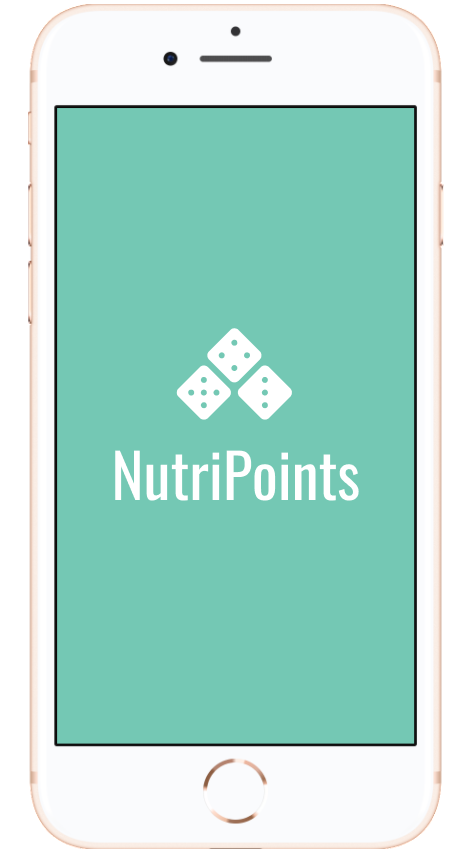
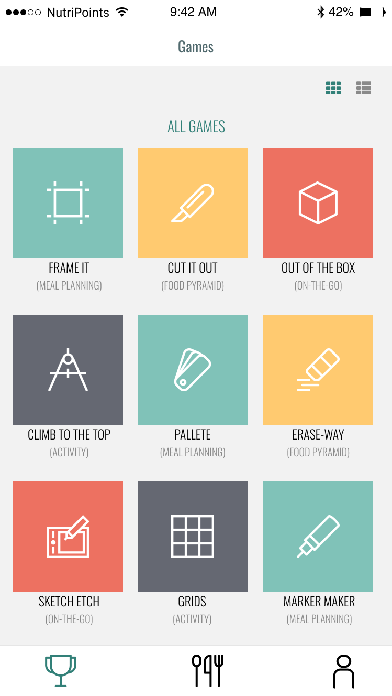

NUTRIPOINTS
Without understanding the need for nutritional prioritization it can be difficult for food insecure teenagers to manage their academic and family commitments without sacrificing their health. NutriPointsis a food education program is aimed at young teens, especially those facing food insecurity. The goal of the application is to give teens the opportunity to earn credit towards free or discounted meals through playing games and learning about nutrition.
Design Tools: Figma
Role: Art Director and UX Designer
Organization: University of Washington HCDE Program
PLAY

SELECT A GAME
Users can select from one of many games in order to earn points. Each game provides some facts and knowledge related to important nutritional information that young teens should have.

PLAY GAME + RESULTS
When the user selects and completes a game, they will be able to view their game play results statistics. This includes the number of points they have earned during the game, which they can then use towards healthy meals and ingredients local grocery stores and participating restaurants.
SPEND

GROCERY
NutriPoints focuses on grocery, instead of restaraunts, in order to encourage users to develop economical and sustainable healthy food habits. Here, users can quickly see how many calories per serving in each item, as well as how many servings in one item.

MACROS + MEAL IDEAS
When the users selects a food item, they can see the macros, nutritional facts, as well as meal ideas. These functionalities further educate students in learning what's in the food their eating, as well as how they can use groceries for healthy, affordable, and filling meals.

RESTAURANTS
Users also have the option to spend their points at local participating restaurants that offer healthy menu options. The number of points required to redeem one restaurant item is significantly higher, incentivizing users to shop groceries over take out.

NUTRITION FACTS
All grocery and restaurant items offered through NutriPoints allow users to readily access the nutritional facts through the app before redeeming an item. This allows students to apply the knowledge they learn in the game play environment to make healthy food choices.
UX Challenges and Takeaways
This project was a great way for me to get more exposure to Figma, as well as work on a PC laptop for the first time when designing. I enjoyed expirimenting with the use of minimalistic and clean design, while also making the application look engaging for young students by using brighter colors. Look below to see the full prototype hosted on Figma.com!